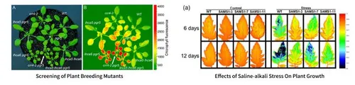
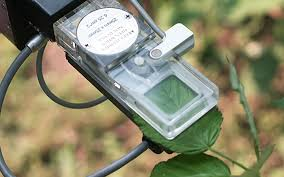

P. capsici is a well-known plant pathogen that infects many
host plants, including pepper, tomato, and cucumber. It causes root
rot, blight, and fruit rot. We aim to create a localized biosensor
that incorporates the following principles:
1. Chlorophyll Fluorescence
When plants absorb light, they use some of the energy for
photosynthesis, and some of it is re-emitted as light
(fluorescence). The emitted fluorescence can be measured and used to
analyze the health and efficiency of photosynthetic processes.
When chlorophyll molecules absorb light energy, three primary
processes can occur:
Photochemistry - Energy is used for
photosynthesis.
Fluorescence - Excess energy is re-emitted as
light.
Heat Dissipation (NPQ) - Excess energy is
released as heat to prevent damage.
By measuring chlorophyll fluorescence, we can assess
Photosystem II (PSII) efficiency and detect plant
stress before visible symptoms appear. The
Fv/Fm ratio represents the maximum potential
efficiency of PSII, with lower values indicating stress or damage.
By measuring parameters like Fv/Fm (maximum quantum efficiency of
PSII) and NPQ (non-photochemical quenching), researchers can
determine how P. capsici infection impairs
Fv/Fm: Reflects the maximum efficiency of photosystem II (PSII) in
plants. A decrease in this value indicates stress, as it shows a
reduction in the plant's ability to carry out photosynthesis.
Healthy plants: Typically, a Fv/Fm value of 0.83 - 0.85 is
considered normal for non-stressed plants.
Stressed plants: A decrease below 0.75 suggests photosystem damage
due to environmental stress or pathogen infection.
Measures the plant's ability to dissipate excess light energy as
heat to prevent photodamage. In stressed plants, this value
typically increases to protect PSII from excess light.
Healthy plants: In non-stressed plants, NPQ values typically range
from 0.5 to 1.0 under normal light conditions.
Pathogen-induced stress: A rise in NPQ values to >2.0 may indicate
an overactive photoprotective mechanism in response to pathogen
stress, as the plant tries to dissipate excess light energy in the
presence of infection.
Excessive NPQ (>2.0): Overexpression of NPQ suggests inefficient
photosynthesis, which can occur during the active infection
process by P. capsici.
Measures fluorescence parameters like Fv/Fm, NPQ, Fv/Fo, and ΦPSII
(the efficiency of photosystem II under light).
The PAM (Pulse Amplitude Modulation) technique is commonly used in
chlorophyll fluorescence systems to separate the light-induced
signals and measure photosynthetic efficiency [5][6][7][8][9].

Graphs Obtained when the Fluroscence is occured
[10]

The idea for the chlorophyll fluorescence implementation
[11]
Studies
Study 1: Effect of Phytophthora on Plants
Ebrahimzadeh et al. (2011). “Chlorophyll fluorescence as a tool to
detect Phytophthora infection in plants.” Plant Pathology
Journal.
This study used chlorophyll fluorescence to detect early signs of
Phytophthora infection in pepper plants, showing that
decreases in Fv/Fm and increases in NPQ occurred before the onset
of visible symptoms of infection.
Plants were inoculated with Phytophthora and chlorophyll
fluorescence measurements were taken at several time intervals
post-inoculation to monitor stress responses.
Study 2: Use of Chlorophyll Fluorescence in Tomato
Benschop et al. (2009). “Monitoring pathogen-induced stress in
tomato plants using chlorophyll fluorescence imaging.”
Physiological and Molecular Plant Pathology.
Tomato plants were infected with P. capsici, and
fluorescence parameters (Fv/Fm, NPQ) were measured at multiple
stages of infection. This study showed significant decreases in
Fv/Fm after inoculation with P. capsici, providing a
reliable early indicator of infection.
The Student Project Mars Rover Manipal of MIT have designed a more
feasible flurometer during the year 2023-24. We propose to
collaborate with them and inspire it in making a localized sensor
for our detection method.
3. Soil Moisture Sensor
To check the water logging and moisture conditions , we could
integrate a soil moisture sensor as an add on after further research
and insights abt the situation.
4. Arduino/Raspberry Pi
To code for the parameters and instructions for it to specifier for
and acts as a compiler for the information.
References
[1] E. Ebrahimzadeh, M. R. Azadfar, and A. Khoshkholgh, “Chlorophyll
fluorescence as a tool to detect
Phytophthora capsici infection in pepper plants,” Plant
Pathology Journal, vol. 10, no. 3, pp. 147-154, 2011.
[2] B. Benschop, M. W. Verheul, and J. J. van der Linde, “Monitoring
pathogen-induced stress in tomato plants using chlorophyll
fluorescence imaging,” Physiological and Molecular Plant Pathology,
vol. 73, no. 4-6, pp. 210-218, 2009.
[3] D. Kharb, P. K. Sharma, and S. Kumar, “Chlorophyll fluorescence:
A diagnostic tool for detecting
Phytophthora capsici infection in crops,” International
Journal of Plant Pathology, vol. 5, no. 2, pp. 65-73, 2014.
[4] A. Paterson, R. G. Jones, and L. M. Carter, “Fluorescence-based
detection of Phytophthora capsici on pepper plants,” Plant
Disease, vol. 97, no. 11, pp. 1452-1460, 2013.
[5] G. Schreiber, U. Schliwa, and W. Bilger, “Continuous recording
of photochemical and non-photochemical chlorophyll fluorescence
quenching with a new type of modulation fluorometer,” Photosynthesis
Research, vol. 10, no. 1, pp. 51-62, 1986.
[6] R. G. Walters and P. Horton, “Regulation of light harvesting in
green plants,” Annual Review of Plant Biology, vol. 49, no. 1, pp.
125-152, 1998.
[7] B. Demmig-Adams and W. W. Adams III, “The role of xanthophyll
cycle carotenoids in the protection of photosynthesis,” Trends in
Plant Science, vol. 1, no. 1, pp. 21-26, 1996.
[8] N. Baker, “Chlorophyll fluorescence: A probe of photosynthesis
in vivo,” Annual Review of Plant Biology, vol. 59, pp. 89-113, 2008.
[9] K. Maxwell and G. N. Johnson, “Chlorophyll fluorescence—a
practical guide,” Journal of Experimental Botany, vol. 51, no. 345,
pp. 659-668, 2000.